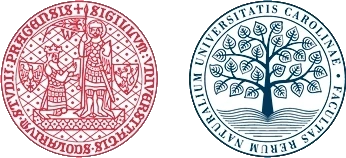
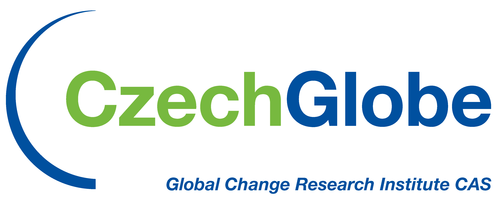
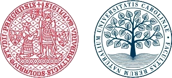
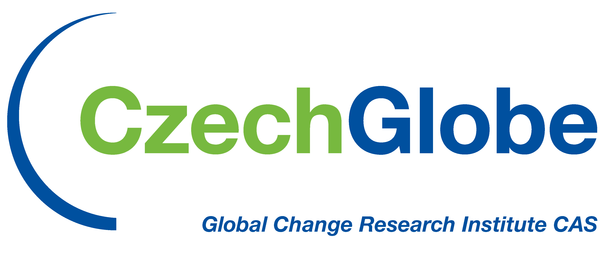
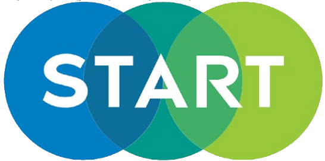
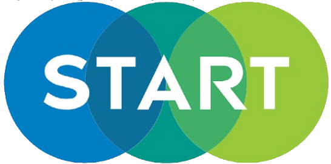

Joint Workshop of the SCERIN and MedRIN Networks on Earth System Observations
17th - 20th June 2025 in Burgas, Bulgaria
 



 

About SCERIN & MedRIN
The activities of both SCERIN and MedRIN aim to contribute to the work of the Global Observation of Forest and Land Cover Dynamics (GOFC-GOLD) panel of the Global Terrestrial Observing System program for observations, modeling, and analysis to support sustainable development. Both, SCERIN and MedRIN belong to GOFC-GOLD Regional networks and contribute to advance the organization’s goals to improve the methods for monitoring the dynamics, stability and vulnerability of the major regional ecosystems for future effective sustainable management and preservation. The two networks include remote sensing (RS) scientists and professionals based in the SCERIN and MedRIN regions or with scientific interests in these regions. The networks strive to ensure continuity and collaboration between the scientists, professionals and existing RS networks in both European regions: South, Central, and East Europe (SCERIN) and Mediterranean (MedRIN).
SCERIN focuses on the Danube watershed and western Black Sea coast, which include the territories of Bulgaria, Bosnia and Herzegovina, Croatia, Czech Republic, Greece, Hungary, Moldova, Macedonia, Poland, Romania, Serbia, Slovakia, Slovenia, Turkey, Ukraine, and other neighboring countries. The structure of SCERIN consists of five Focus Groups (FGs):
- FG1: Forest monitoring – forest management, forest health and function, forest disturbances and biomass [Leads: M. Nita/J. Albrechtová/F. Zemek]
- FG2: Land cover changes – agricultural abandonment, urban expansion [Leads: G. Taff/ L. Kupková/ P. Stych/ L. Genc]
- FG3: Water management and LC impacts [river watersheds, catchments, dams, Leads: V. Starodubtsev/ I. Pilas]
- FG4: Validation/verification of global products with regional significance [Leads: L. Filchev/ I. Manakos/A. Halabuk/P. Campbell]
- FG5: Urban ecosystems in the context of climate change
MEDRIN shares developments and furthers Earth Observation (EO) scientific collaborations in the Mediterranean region (Southern European, North African, and Middle East (Levant)). MEDRIN community members include those from Cyprus, Egypt, France, Greece, Italy, Lebanon, Malta, Spain, Turkey and other Mediterranean nations, as well as crossover memberships with SCERIN nation-state community members. A North African Regional Information Network (NARIN) is being established and MEDRIN will coordinate activities once fully established. The structure of MedRIN consists of priority topics of the region identified by the community, and include relevant land-cover / land-use change aspects:
- Urban and built-up areas (wildland / urban interface, population dynamics and how that affects landscape systems);
- Rural areas / Agriculture, Forestry and Wildlands (monitoring dynamic landscape changes);
- Hazards (fires (including agricultural fires), earthquakes, floods, etc.);
- Soil and Water resources management issues (Irrigation/Hydrology, Soil Degradation, Desertification);
- Climate Change and its impacts on local / regional environments and adaptations;
- Education / Training / Outreach of the proposed priority areas listed above (through the Trans-Atlantic Training (TAT) NASA-ESA model).
There have already been several separate/independent SCERIN and MedRIN workshops (http://scerin.eu), which were successful in organizing strong teams of network participants, including researchers, remote-sensing experts and professionals from the operational agencies, who agreed on a common set of network goals, networks structure and priority objectives. The RIN’s priorities were outlined and their needs for networking and capacity building initiatives were formulated. The workshops have focused on the specific LCLUC challenges in the different countries, and have initiated several regional collaborative activities.
There was also one highly successful Joint MedRIN and SCERIN-8 Capacity Building Workshop on EOS June 15-17, 2021 which focused on ‘Ecosystem health, drought, and wildfires in the context of climate change’, reviewed the priorities of the networks and outlined topics and activities of common interest for both SCERIN and MedRIN.